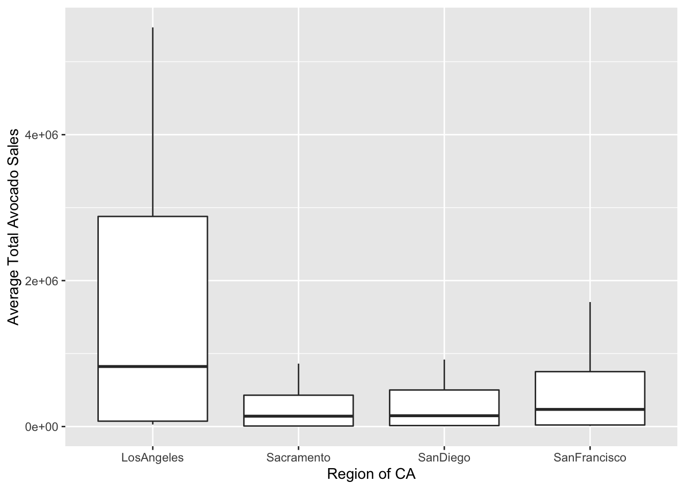
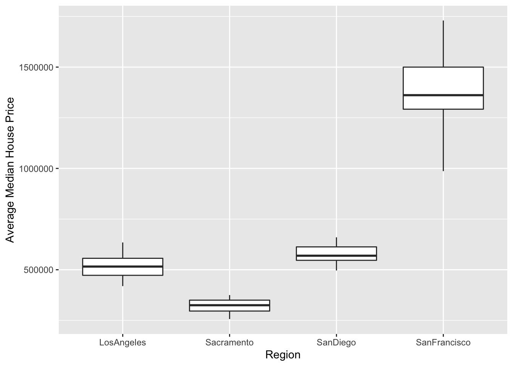

avocados <- read_csv(here::here("supporting_artifacts", "learning targets", "avocado.csv"))
houses <- read_xls(here::here("supporting_artifacts", "learning targets", "CAHousePrices.xls"),
sheet = "Median Price",
skip = 7,
n_max = 400)
#houses dataset from: https://car.sharefile.com/share/view/s0c02663a5c54e23aChallenge 4: Avocados and Millennials
Note: One of my lab group members, Jake, and I worked together to find the dataset for house prices online and shared ideas on how to clean it up. From there on, we did our analyses and conclusions separately.
cali <- data.frame(region = c("LosAngeles", "Sacramento", "SanDiego", "SanFrancisco"))
avocados <- avocados |>
semi_join(cali, by = "region")houses <- houses |>
filter(year(`Mon-Yr`) <= 2018,
year(`Mon-Yr`) >= 2015) |>
select(`Los Angeles`, `San Francisco`, `San Diego`, `Sacramento`) |>
rename("LosAngeles" = `Los Angeles`,
"SanFrancisco" = `San Francisco`,
"SanDiego" = `San Diego`) |>
pivot_longer(cols = "LosAngeles":"Sacramento",
names_to = "region",
values_to = "house_prices") avo_new <- avocados |>
select(region, `Total Volume`) |>
left_join(houses, by = "region")ggplot(data = avo_new, mapping = aes(x = region, y = `Total Volume`)) +
geom_boxplot() +
xlab("Region of CA") +
ylab("Average Total Avocado Sales")
ggplot(data = avo_new, mapping = aes(x = region, y = house_prices)) +
geom_boxplot() +
xlab("Region") +
ylab("Average Median House Price")

I argue that millennials are not misusing the money that could go towards buying a house to instead buy avocados for avocado toast. When examining the total sales of avocados per region beside the median house prices per region, we can see that in San Francisco, where house prices are extremely high, avocado sales are relatively low. Conversely, in Los Angeles where avocado sales are very high, the median house prices are much lower. Therefore, millennials are spending their money wisely and only spending a lot on avocados when they can afford it.